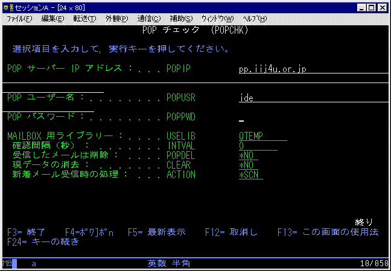

＜概要＞
POPサーバーのメール一覧を受信します。

MAILBOX 用ライブラリー：
- このライブラリーに４つの物理ファイルを作成し、メールのデータを出力します。
確認間隔：
- ０は一回でプログラム終了します。
- ０より大きい値を設定すると、その時間間隔（秒）でＬＯＯＰします。終了にはENDJOBが必要です。
受信したメールは削除：
- ＊ＹＥＳは受信したメールをPOPサーバーより削除します。
- ＊ＮＯは受信したメールをPOPサーバーより削除しません。
現データの消去：
- ＊ＹＥＳは関連する物理ファイルをクリアします。
- ＊ＮＯは関連する物理ファイルをクリアしません、前回受信後の新着メールのみ受信します。
新着メール受信時の処理：
- ＊ＮＯＮＥは何もしません。
- ＊ＭＳＧは指定したＭＳＧＱにユーザーメッセージを送信します。
- ＊ＳＣＡＮは POPSCN コマンドを実行します。
- ＊ＣＭＤは設定したコマンドを実行します。
- ＊ＦＷＤは POPFWD コマンドを実行します。
- ＊ＣＰＹは POPCPY コマンドを実行します。
|